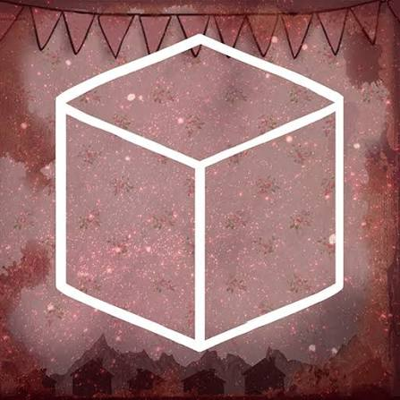

“Welcome to your 9th birthday.”
Cube Escape: Birthday é o sétimo episódio da série Cube Escape e um dos capítulos mais importantes para a história do universo de Rusty Lake. Lançado em 15 de fevereiro de 2016, o jogo leva o jogador de volta a um momento importante da infância de Dale Vandermeer. Durante seu aniversário de nove anos, Dale está comemorando em sua casa junto com sua família. Porém, aquilo que deveria ser uma celebração comum rapidamente se transforma em um acontecimento misterioso e perturbador. Para descobrir o que está acontecendo, o jogador precisa explorar a casa, encontrar objetos e resolver uma série de enigmas.
A história acontece durante o aniversário de nove anos de Dale Vandermeer. Dale está em sua casa comemorando a data com sua família. O ambiente inicialmente parece representar uma celebração familiar comum, com bolo, presentes e decoração de aniversário. Entretanto, acontecimentos estranhos começam a transformar a comemoração em uma experiência traumática. O passado de Dale é uma parte importante da narrativa do universo de Rusty Lake, e Birthday mostra um acontecimento que terá consequências para sua vida futura. O episódio também ajuda a explicar melhor a ligação de Dale com os acontecimentos de Rusty Lake e com sua investigação.
Dale Vandermeer é o personagem central de Cube Escape: Birthday. No jogo, ele aparece como uma criança de nove anos durante a comemoração de seu aniversário. Dale é um dos personagens mais importantes do universo Rusty Lake. Na fase adulta, ele se torna um detetive e passa a investigar uma série de acontecimentos misteriosos relacionados ao lago. Birthday mostra uma parte de seu passado e ajuda a compreender acontecimentos que influenciaram sua vida.